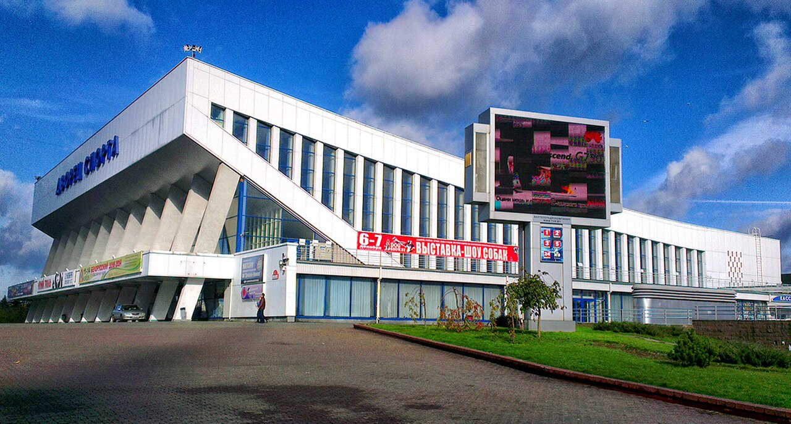

Historical and reference coats of arms


Minsk
Guide. Places in this edition: 36.
OTIUM is the practice of deliberate leisure. In the classical sense, otium is not escape from work but time when attention returns to memory, landscape, and thought — without a utilitarian deadline.
We shape routes for lingering, not for checklist tourism. The goal is presence in a place rather than consumption of sights.
OTIUM is not a tour operator. It is an invitation to walk, pause, and leave a route unfinished if the light on a façade deserves another minute.
Historical and reference coats of arms
Guide. Places in this edition: 36.
Minsk is the capital of Belarus and its largest city on the Svislach River.
Mentioned by the eleventh century, rebuilt after twentieth-century destruction, it is known for broad avenues and green wedges. Industry, technology, and national institutions define its present rhythm.
The world wars and post-war reconstruction produced wide prospekty; independence after 1991 made Minsk the capital of a sovereign Belarus mixing manufacturing, IT, and multinational memory of the borderlands.

Archcathedral of the Blessed Virgin Mary is a historic and cultural landmark in Minsk.

Belarusian History Museum — landmark in Minsk.

Belarusian State Circus — landmark in Minsk.

Chelyuskinites Park — landmark in Minsk.

Church of All Saints — landmark in Minsk.

The Church of Saints Simon and Helena (Belarusian: Касьцёл сьвятых Сымона і Алены, romanized: Kaściol śviatych Symona i Alieny; Russian: Костёл Святого Симеона и Святой Елены, romanized: Kostel Svyatogo Simeona i Svyatoy Eleny); Polish: Kościół św. Heleny w Mińsku), also known as the Red Church (Belarusian: Чырвоны касьцёл; Russian: Красная церковь, romanized: Krasnaya tserkov; Polish: Czerwony Kościół), is a Roman Catholic church on Independence Square in Minsk, Belarus.

Church of Sts Peter and Paul — landmark in Minsk.

Drozdy reservoir — landmark in Minsk.

Gorky Park (Central Children's Park) in Minsk is a large riverside green space with paths, rides, and monuments, popular for walks along the Svislach.

Great Patriotic War Museum — landmark in Minsk.

The Holy Spirit Cathedral in the Upper Town is Minsk's principal Belarusian Orthodox church, rebuilt in the 18th century with baroque forms and a landmark white façade.

Independence Square (Niezaležnasci) is the ceremonial centre of Minsk, linking the Red Church, government buildings, and major avenues through the post-war city core.

Island of Tears — landmark in Minsk.

Island of Tears is a historic and cultural landmark in Minsk.
Minsk aircraft carrier.jpg

Minsk aircraft carrier.jpg — landmark in Minsk.

Minsk Arena (Belarusian: Мінск-Арэна, Russian: Минск-Арена) is the main indoor arena in Minsk, Belarus. The Minsk-Arena complex includes the main multi-purpose arena (capable of hosting 15,000 spectators) with an open multi-level parking lot (with 1,080 parking spaces) alongside an interconnected 2,000-seat velodrome and a 3,000-seat speed skating rink.
Minsk mosque.jpg

Minsk mosque.jpg — landmark in Minsk.

Minsk railway station — landmark in Minsk.
Minsk Sports Palace (BLR).jpg

Minsk Sports Palace (BLR).jpg — landmark in Minsk.

Minsk triumphal arch — landmark in Minsk.
Museum of boulders, Minsk - 2018.jpg

Museum of boulders, Minsk - 2018.jpg — landmark in Minsk.

National Art Museum — landmark in Minsk.

The National Library of Belarus (Belarusian: Нацыянальная бібліятэка Беларусі, romanized: Natsyyanal'naya bibliyateka Byelarusi, Russian: Национальная библиотека Беларуси, romanized: Natsional'naya biblioteka Belarusi) is the largest library in the Republic of Belarus, located in Minsk. It houses the largest collection of Belarusian printed materials and the third largest collection of books in Russian behind the Russian State Library (Moscow) and the Russian National Library (Saint Petersburg).

National Opera and Ballet — landmark in Minsk.
New Minsk mosque p01.jpg

New Minsk mosque p01.jpg — landmark in Minsk.

October Square — landmark in Minsk.

October Street — landmark in Minsk.

The Palace of the Republic on Independence Square is Minsk's main concert and congress hall, used for state events, performances, and large public gatherings.

Red Church is a historic and cultural landmark in Minsk.

St Elizabeth Convent is a historic and cultural landmark in Minsk.

St Roch church is a historic and cultural landmark in Minsk.

Trinity Hill — landmark in Minsk.

Upper Town Minsk — landmark in Minsk.

Victory Square (Belarusian: Пло́шча Перамо́гі, romanized: Plóšča Pieramóhi; Russian: Пло́щадь Побе́ды) is a square in Minsk, Belarus, located at the intersection of Independence Avenue and Zakharau Street. The square is located in the historic centre of Minsk with the Museum of the 1st Congress of RSDLP, the main offices of National State TV and Radio and the City House of Marriages nearby. A green park stretches from Victory Square to the Svislach River and to the entrance to Gorky Park.

The Yakub Kolas Square (Belarusian: Плошча Якуба Коласа - Plošča Jakuba Kolasa) is a square in Pershamayski District of Minsk, located on the crossing of Independence Avenue, Yakub Kolas street and Vera Khoruzhaya street. The square was named in honour of the folk poet and one of the founders of the classic Belarusian literature - Yakub Kolas. Description History Yakub Kolas square is located at the place of the historical village Kamarouka, which in turn gave name to the nearby Kamarou Flee Market.
МЦ1.jpg

МЦ1.jpg — landmark in Minsk.